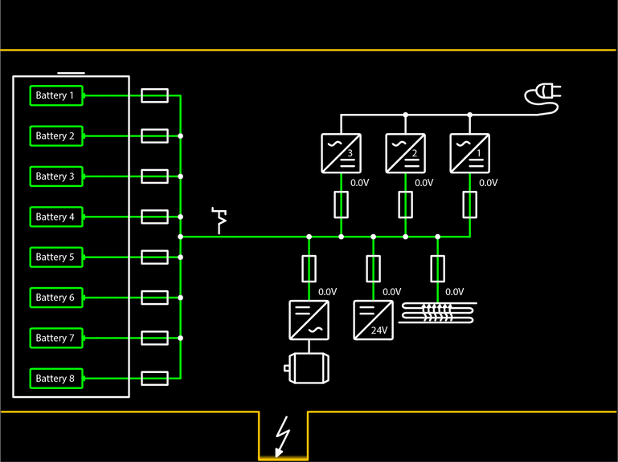

Bildschirmseite Hochvoltversorgung (Hochvoltsystem)
Taste Bildschirmseite Hochvoltversorgung
Auf Bildschirmseite Hochvoltversorgung umschalten.

Fig. 2877: Bildschirmseite Hochvoltversorgung
Fig. 2877: Bildschirmseite Hochvoltversorgung
Je nach Maschine und Anforderung können unterschiedlich viele Hochvoltbatterien und Ladegeräte am Bildschirm eingeblendet sein.
Anzeige Hochvoltbatterie (leuchtet grün)
Hauptschütz ist geschlossen.
Hochvoltbatterie ist aktiv.
Anzeige Hochvoltbatterie (leuchtet gelb)
Hauptschütz ist geöffnet.
Hochvoltbatterie ist inaktiv.
Anzeige Sicherung (leuchtet grün)
Hochvoltbatterie ist aktiv.
Hochvoltversorgungsleitung ist aktiv.
Anzeige Sicherung (leuchtet gelb)
Hochvoltbatterie ist inaktiv.
Hochvoltversorgungsleitung ist inaktiv.
Anzeige Hochvoltversorgung des Ladegeräts
Verbindung zu Ladegerät ist inaktiv.
Hochvoltspannungsmessung ist inaktiv.
Anzeige Hochvoltversorgung des Ladegeräts (leuchtet gelb)
Verbindung zu Ladegerät ist aktiv.
Hochvoltspannungsmessung ist aktiv.
Hochvoltspannung ist nicht vorhanden.
Anzeige Hochvoltversorgung des Ladegeräts (leuchtet grün)
Verbindung zu Ladegerät ist aktiv.
Hochvoltspannungsmessung ist aktiv.
Hochvoltspannung ist vorhanden.
Anzeige Hochvoltversorgung des Elektromotors
Verbindung zu Elektromotor ist inaktiv.
Hochvoltspannungsmessung ist inaktiv.
Anzeige Hochvoltversorgung des Elektromotors (leuchtet gelb)
Verbindung zu Elektromotor ist aktiv.
Hochvoltspannungsmessung ist aktiv.
Hochvoltspannung ist nicht vorhanden.
Anzeige Hochvoltversorgung des Elektromotors (leuchtet grün)
Verbindung zu Elektromotor ist aktiv.
Hochvoltspannungsmessung ist aktiv.
Hochvoltspannung ist vorhanden.
Anzeige Hochvoltversorgung des DC-DC-Wandlers
Verbindung zu DC-DC-Wandler ist inaktiv.
Hochvoltspannungsmessung ist inaktiv.
Anzeige Hochvoltversorgung des DC-DC-Wandlers (leuchtet gelb)
Verbindung zu DC-DC-Wandler ist aktiv.
Hochvoltspannungsmessung ist aktiv.
Hochvoltspannung ist nicht vorhanden.
Anzeige Hochvoltversorgung des DC-DC-Wandlers (leuchtet grün)
Verbindung zu DC-DC-Wandler ist aktiv.
Hochvoltspannungsmessung ist aktiv.
Hochvoltspannung ist vorhanden.
Anzeige Hochvoltversorgung des Hochvoltheizers
Verbindung zu Hochvoltheizer ist inaktiv.
Hochvoltspannungsmessung ist inaktiv.
Anzeige Hochvoltversorgung des Hochvoltheizers (leuchtet gelb)
Verbindung zu Hochvoltheizer ist aktiv.
Hochvoltspannungsmessung ist aktiv.
Hochvoltspannung ist nicht vorhanden.
Anzeige Hochvoltversorgung des Hochvoltheizers (leuchtet grün)
Verbindung zu Hochvoltheizer ist aktiv.
Hochvoltspannungsmessung ist aktiv.
Hochvoltspannung ist vorhanden.
Anzeige HVDU-Trennschalter (geschlossen)
HVDU-Trennschalter ist geschlossen.
Anzeige HVDU-Trennschalter (offen)
HVDU-Trennschalter ist geöffnet.